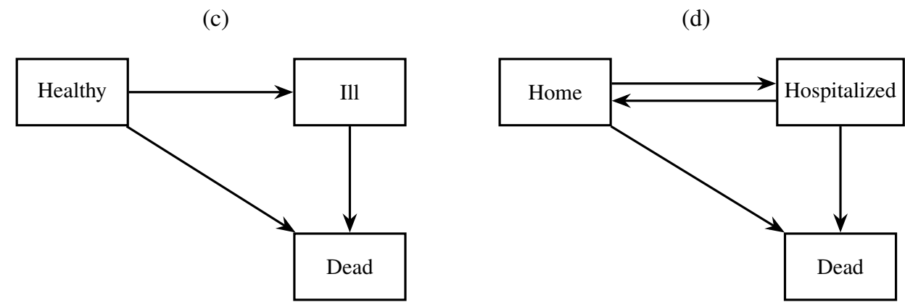
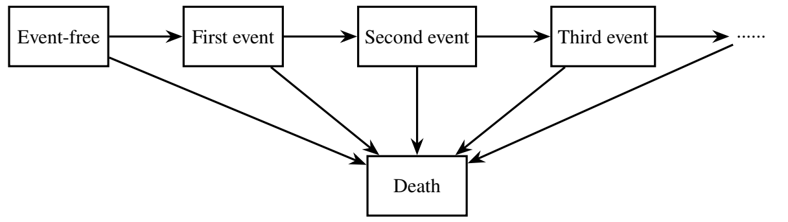

########################################
# Cox-type model for a specific transition
########################################
library(survival)
# Data assumed to be in long format
fit_kj <- coxph(Surv(start, stop, status) ~ covariates,
data = df,
subset = (from == k & to == j))
summary(fit_kj)Chapter 12 - Multistate Modeling of Life History
Slides
Lecture slides here. (To convert html to pdf, press E \(\to\) Print \(\to\) Destination: Save to pdf)
Chapter Summary
Multistate models describe subjects transitioning through a series of discrete states over time (e.g., disease progression), generalizing standard survival models to accommodate multiple types or sequences of events. These models unify frameworks for competing risks, recurrent events, and semi-competing risks by specifying transition intensities between states and estimating quantities such as state occupancy and sojourn times.
Model structure
Let \(Y(t) \in \{0, 1, \ldots, K\}\) denote the state occupied at time \(t\). Some examples are shown in the diagrams below:



Transitions between states are governed by:
Transition intensities
\[ \lambda_{kj}\{t \mid \mathcal{H}^*(t-)\} = \Pr(Y(t+\mathrm{d}t) = j \mid Y(t-) = k, \mathcal{H}^*(t-)), \] where \(\mathcal{H}^*(t)\) is the subject’s full state history up to \(t\).- Markov assumption: \(\lambda_{kj}\{t \mid \mathcal{H}^*(t-)\} = \lambda_{kj}(t)\)—depends only on current state and time.
- Semi-Markov: allows dependence on time since entry into current state.
- Markov assumption: \(\lambda_{kj}\{t \mid \mathcal{H}^*(t-)\} = \lambda_{kj}(t)\)—depends only on current state and time.
Transition probabilities (Markov) \[ P_{kj}(s, t) = \Pr\{Y(t) = j \mid Y(s) = k\}, \] with matrix representation \(\mathbf{P}(s, t)\) that satisfies a product-integral formula: \[ \mathbf{P}(s, t) = \prod_{u = s}^t \{\mathbf{I} + \mathrm{d}\boldsymbol{\Lambda}(u)\}. \]
- Estimation: use discrete versions of transition intensities from observed data.
Sojourn time and state occupancy
\[ \mu_k(\tau) = \int_0^\tau P_k(t) \, \mathrm{d}t, \] where \(P_k(t)\) is the probability of being in state \(k\) at time \(t\).
Nonparametric estimation
The Aalen–Johansen estimator generalizes the Kaplan–Meier and Gray estimators:
Discrete intensity estimator: \[ \mathrm{d}\hat{\Lambda}_{kj}(t) = \frac{\# \text{transitions } k \to j}{\# \text{at risk in state } k}, \] computed at each observed transition time \(t\).
Cumulative probability matrix: \[ \hat{\mathbf{P}}(0, t) = \prod_{t_j \le t} \left\{ \mathbf{I} + \mathrm{d}\hat{\boldsymbol{\Lambda}}(t_j) \right\}. \]
- Recovers Kaplan–Meier for single events and Gray’s estimator for competing risks.
- Produces nonparametric estimates of transition probabilities and mean sojourn times.
- Recovers Kaplan–Meier for single events and Gray’s estimator for competing risks.
Cox-type regression models
Transition-specific covariate effects are modeled via multiplicative intensity models:
Modulated Markov model: \[ \lambda_{kj}(t \mid Z(t)) = \lambda_{kj0}(t) \exp\big(\beta_{kj}^\mathrm{T} Z(t)\big). \]
Modulated semi-Markov model (includes duration in current state): \[ \lambda_{kj}(t \mid Z(t), B(t)) = \lambda_{kj0}(t) \exp\big(\beta_{kj}^\mathrm{T} Z(t) + \gamma_{kj} B(t)\big), \] where \(B(t)\) is the time since entering state \(k\).
These models are estimated using the Cox partial likelihood on data in counting process format.
Example R code
Below is a code snippet for fitting a Cox-type model to a \(k \to j\) transition using coxph() from the survival package.
Here:
start, stop: entry and exit times of the interval at risk;status: indicator of the \(k \to j\) transition (1 if observed, 0 otherwise);from, to: initial and target states.
Repeat for each possible transition; estimation is separate due to likelihood factorization.
Conclusion
Multistate models generalize survival analysis to account for multiple transitions, absorbing states, and intermediate events. Their flexible structure accommodates competing risks, recurrent events, and semi-competing frameworks. Nonparametric estimators like Aalen–Johansen and Cox-type regression models enable estimation of state-specific risks and covariate effects. This approach provides a unified and interpretable framework for analyzing complex disease processes.
R Code
Show the code
###############################################################################
# Chapter 12 R Code
#
# This script reproduces all major numerical results in Chapter 12, including:
# 1. Multi-state analysis of the German Breast Cancer (GBC) Study
###############################################################################
#==============================================================================
# (A) Read and Prepare the Data
#==============================================================================
library(survival) # For coxph and Surv
#------------------------------------------------------------------------------
# 1. GBC Multi-State Data
#------------------------------------------------------------------------------
gbc_ms <- read.table("Data//German Breast Cancer Study//gbc_ms.txt")
#------------------------------------------------------------------------------
# 2. Data Preprocessing
# - Age grouping
# - Time intervals
# - Rescaling hormones
# - Converting certain variables to factors
#------------------------------------------------------------------------------
# Age categories: <=40 => group 1; (40,60] => group 2; >60 => group 3
gbc_ms$agec <- (gbc_ms$age <= 40) +
2 * (gbc_ms$age > 40 & gbc_ms$age <= 60) +
3 * (gbc_ms$age > 60)
# Bt: time spent in current state
gbc_ms$Bt <- gbc_ms$stop - gbc_ms$start
# Rescale progesterone and estrogen levels by 10
gbc_ms$prog <- gbc_ms$prog / 10
gbc_ms$estrg <- gbc_ms$estrg / 10
# Convert variables to factors
gbc_ms$hormone <- factor(gbc_ms$hormone)
gbc_ms$meno <- factor(gbc_ms$meno)
gbc_ms$agec <- factor(gbc_ms$agec)
#==============================================================================
# (B) Fit Transition-Specific Cox Models
# States: 0=remission, 1=relapse, 2=death
#==============================================================================
#------------------------------------------------------------------------------
# 1. 0 -> 1: Remission to relapse
#------------------------------------------------------------------------------
obj01 <- coxph(
Surv(start, stop, status) ~ hormone + meno + agec + size + prog + estrg + strata(grade),
data = gbc_ms,
subset = ((from == 0) & (to == 1))
)
#------------------------------------------------------------------------------
# 2. 0 -> 2: Remission to death
#------------------------------------------------------------------------------
obj02 <- coxph(
Surv(start, stop, status) ~ hormone + meno + size + prog + estrg + strata(grade),
data = gbc_ms,
subset = ((from == 0) & (to == 2))
)
#------------------------------------------------------------------------------
# 3. 1 -> 2: Relapse to death
#------------------------------------------------------------------------------
obj12 <- coxph(
Surv(start, stop, status) ~ Bt + hormone + meno + agec + size + prog + estrg + strata(grade),
data = gbc_ms,
subset = ((from == 1) & (to == 2))
)
#==============================================================================
# (C) Tabulate Model Results
# Hazard Ratios, 95% CI, and p-values for each transition
#==============================================================================
library(dplyr) # if needed for data manipulation
library(stringr)
#------------------------------------------------------------------------------
# 1. 0 -> 1: Remission to relapse
#------------------------------------------------------------------------------
beta01 <- obj01$coefficients
se01 <- sqrt(diag(obj01$var))
p01 <- 1 - pchisq((beta01 / se01)^2, 1)
c1_01 <- round(exp(beta01), 3)
c2_01 <- paste0(
"(",
round(exp(beta01 - 1.96 * se01), 3), ", ",
round(exp(beta01 + 1.96 * se01), 3), ")"
)
c3_01 <- round(p01, 3)
noquote(cbind(c1_01, c2_01, c3_01))
#------------------------------------------------------------------------------
# 2. 0 -> 2: Remission to death
#------------------------------------------------------------------------------
beta02 <- obj02$coefficients
se02 <- sqrt(diag(obj02$var))
p02 <- 1 - pchisq((beta02 / se02)^2, 1)
c1_02 <- round(exp(beta02), 3)
c2_02 <- paste0(
"(",
round(exp(beta02 - 1.96 * se02), 3), ", ",
round(exp(beta02 + 1.96 * se02), 3), ")"
)
c3_02 <- round(p02, 3)
noquote(cbind(c1_02, c2_02, c3_02))
#------------------------------------------------------------------------------
# 3. 1 -> 2: Relapse to death
#------------------------------------------------------------------------------
beta12 <- obj12$coefficients
se12 <- sqrt(diag(obj12$var))
p12 <- 1 - pchisq((beta12 / se12)^2, 1)
c1_12 <- round(exp(beta12), 3)
c2_12 <- paste0(
"(",
round(exp(beta12 - 1.96 * se12), 3), ", ",
round(exp(beta12 + 1.96 * se12), 3), ")"
)
c3_12 <- round(p12, 3)
noquote(cbind(c1_12, c2_12, c3_12))